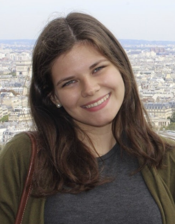

Prof. Dr. Costas Andreopoulos
At any given time our group spans 15 time zones, with group members based at the
University of Liverpool, at the
Rutherford Appleton Laboratory
just south of Oxford,
at Fermilab west of Chicago,
and at J-PARC north of Tokyo.
We became nomads to pursue the best science and to address some of the most important questions in our field. Our focus is on accelerator-based neutrino physics, and we conduct research mainly in the Fermilab SBN programme, particularly in the SBND experiment, and in the T2K experiment in Japan. We contribute to R&D for the future DUNE experiment in US, and explore disruptive neutrino applications in the ESA-funded POSITRINO project. The group is renowned for its expertise in the area of advanced neutrino data analysis and physics simulations, and we lead VALOR and GENIE, two well-known brand names in neutrino physics.
Meet my awesome group below!
We became nomads to pursue the best science and to address some of the most important questions in our field. Our focus is on accelerator-based neutrino physics, and we conduct research mainly in the Fermilab SBN programme, particularly in the SBND experiment, and in the T2K experiment in Japan. We contribute to R&D for the future DUNE experiment in US, and explore disruptive neutrino applications in the ESA-funded POSITRINO project. The group is renowned for its expertise in the area of advanced neutrino data analysis and physics simulations, and we lead VALOR and GENIE, two well-known brand names in neutrino physics.
Meet my awesome group below!
Post-Doctoral Research Associates

2016 - present:
Dr. Marco Roda (University of Liverpool)
Position funded by the DUNE-UK STFC project and the Liverpool Physics Dept.
Projects: SBN/SBND, DUNE, GENIE, POSITRINO
Positions of responsibility: 2018 - present, SBN Neutrino MC Generators WG co-Coordinator; 2019 - present, GENIE Forum Coordinator
Positions of responsibility: 2018 - present, SBN Neutrino MC Generators WG co-Coordinator; 2019 - present, GENIE Forum Coordinator

2016 - present:
Dr. Steve Dennis (University of Liverpool)
Position funded by DUNE-UK STFC project.
Projects: T2K, SBN/SBND, DUNE, GENIE, VALOR
Positions of responsibility: 2017 - present, DUNE-UK WP1.1 [Near Detector Constraints and Oscillation Sensitivity] Coordinator; 2018 - present, VALOR/SBN coordinator
Positions of responsibility: 2017 - present, DUNE-UK WP1.1 [Near Detector Constraints and Oscillation Sensitivity] Coordinator; 2018 - present, VALOR/SBN coordinator

2019 - present:
Dr. Chris Barry (University of Liverpool)
Position funded by the European Space Agency.
Projects: POSITRINO

2019 - present:
Ms. Glória de Sá Pereira
(University of Liverpool and STFC/RAL)
PhD studentship fully funded by an STFC award
(project reference: 2300442)
to the Rutherford Appleton Laboratory (RAL) Particle Physics Dept (PPD).
This is a joint position with the University of Liverpool and
LIV.DAT,
the Liverpool Big Data Science Centre for Doctoral Training.
Thesis [Tentative]: Deep Learning Applications for Neutrino Event Reconstruction
in Liquid Argon Time Projection Chamber Detectors and
Measurement of Zero-Pion Production in SBND.

2019 - present:
Mr. Jaiden Parlone (University of Liverpool)
PhD studentship fully funded by an STFC award
(project reference: 2275621)
to the Physics Dept. of the University of Liverpool.
This is a joint position with the University of Liverpool and
LIV.DAT,
the Liverpool Big Data Science Centre for Doctoral Training.
Thesis [Tentative]:
Charge-Parity (CP) Violation from a Global 3-Flavour Analysis of Neutrino and Antineutrino Data
from Long-Baseline Accelerator-Based Experiments.

2018 - present:
Mr. Frank Thomas Ham (University of Liverpool)
PhD studentship funded by STFC
(project reference 2113282)
and a Liverpool Graduate Teaching Award.
Thesis [Tentative]: SBN electron-neutrino appearance, SBND-driven systematic constraints

2017 - present:
Ms. Júlia Tena Vidal (University of Liverpool)
PhD studentship funded by STFC through
LIV.DAT, the Liverpool Big Data Science Centre for Doctoral Training
(project reference: 2021488)
Co-supervisor: Prof. Hugh Gallagher (Tufts)
Thesis [Tentative]: Global analysis of neutrino scattering data
and development of new GENIE tunes
Recipient of the 2018 Leo Carrol award (Liverpool HEP) for outstanding post-graduate research.

2017 - present:
Mr. Jaggar Henzerling (University of Liverpool)
Thesis [Tentative]: Deep Learning applications
for event selection and reconstruction in SBND

2016 - present:
Mr. Francis Bench (University of Liverpool)
PhD studentship funded by STFC
(project reference 1796813)
and a Liverpool Graduate Teaching Award.
Thesis [Tentative]: Electron-Antineutrino Appearance in T2K
Results from Francis' doctoral work were published in
arXiv:1911.07283, submitted to PRL
Recipent of the 2019 John G Rutherglen memorial prize.
Recipent of the 2019 John G Rutherglen memorial prize.

2016 - present:
Ms Rhiannon Jones (University of Liverpool)
PhD studentship funded by STFC
(project reference 1796886)
and a Liverpool Graduate Teaching Award.
Co-supervisor: Prof. Christos Touramanis (University of Liverpool)
Thesis [Tentative]: Development of SBN muon-neutrino disappearance analysis,
development of exclusive events selections on SBND
2014 - 12/2018:
Dr. Christopher Barry (University of Liverpool)
Thesis:
`Joint Analysis of Neutrino and Antineutrino Data from the T2K Experiment and
Indications for Charge-Parity (CP) Violation'
[Full text in T2K-THESIS-108]
Results from Chris's doctoral work were published in
PRL 121:171802 (2018)
→ Now a Research Associate at the University of Liverpool (ESA/POSITRINO project).
2011 - 10/2015:
Dr. Steve Dennis (Rutherford Appleton Laboratory & University of Warwick)
Co-supervisors: Dr. Steve Boyd (University of Warwick) and Dr. Gary Barker (University of Warwick)
Thesis:
`Muon Antineutrino Disappearance and Non-Standard Interactions at the T2K Experiment'
[full text in T2K-THESIS-069]
Results from Steve's doctoral work were published in
PRL 116:181801 (2016)
→ Now a Research Associate at the University of Liverpool (DUNE, SBND, T2K and GENIE).

2011 - 12/2014:
Dr. Lorena Escudero (CSIC and University of Valencia)
Co-supervisor: Dr. Anselmo Cervera (IFIC Valencia)
Thesis:
`Joint Analysis of Three Flavour Neutrino Oscillations Combining the Electron-Neutrino Appearance
and Muon-Neutrino Disappearance Channels in the T2K Experiment'
[full text in T2K-THESIS-070]
Results from Lorena's doctoral work were published in
PRD 91:072010 (2015).
Recipient of the IFIC outstanding PhD thesis award.
Recipient of the IFIC outstanding PhD thesis award.
→ Now a Research Associate in the Department of Radiology at the University of Cambridge
→ Previously a Research Associate in the Department of Physics at the University of Cambridge (DUNE and MicroBooNE).

2010 - 07/2014:
Dr. Thomas Dealtry (STFC Rutherford Appleton Laboratory & University of Oxford)
Co-supervisor: Prof. Alfons Weber (STFC Rutherford Appleton Laboratory & University of Oxford)
Thesis:
`Precise Measurement of Muon-Neutrino Disappearance in the T2K Experiment'
[Full text in T2K-THESIS-057]
Results from Tom's doctoral work were published in
PRL 111:211803 (2013)
and
PRL 112:181801 (2014).
→ Now a Research Associate at the University of Lancaster (HyperK, T2K).
→ Previously a Research Associate at the University of Oxford (DUNE).

2008 - 12/2012:
Dr. James Dobson (Imperial College London)
Co-supervisor: Dr. Yoshi Uchida (Imperial College London)
Thesis:
`Neutrino-Induced Charged-Current π+ Production at the T2K Near Detector'
[Full text in T2K-THESIS-019]
→ Now an Ernest Rutherford Fellow at UCL (LZ).
→ Previously a Research Associate at UCL/Edinburgh (dark matter experiments).
Fully-funded PhD positions are offered each year. Potential PhD projects are listed below. Several MPhys and BSc projects are also available. I am happy to discuss other possibilities too.
PhD thesis topics offered:
- Observation of Electron Antineutrino Appearance in the T2K Muon Antineutrino Beam.
- Precision Measurement of sin2(2θ23) and |Δm322| using Muon Neutrino and Antineutrino Disapparance in the T2K Experiment.
- Limits On (or Evidence For) CP violation in the Lepton Sector Combining Electron (Anti)Neutrino Appearance and Muon (Anti)Neutrino Disappearance Channels in the T2K Experiment.
- Stringent Tests of the 3-Flavour Neutrino Paradigm in the T2K Experiment.
- Search for Sterile Neutrinos at SBN.
- Measurements of the Muon Neutrino Charged Current Quasielastic Double Differential Cross Section in the SBND liquid-Argon Detector at the Fermilab Booster Neutrino Beam.
- Neutrino-Induced Charged-Current π+ Production in the SBND liquid-Argon Detector at the Fermilab Booster Neutrino Beam.
- Neutrino-Induced Charged-Current π0 Production in the SBND liquid-Argon Detector at the Fermilab Booster Neutrino Beam.
- Development of an Argon tune for the GENIE Neutrino Monte Carlo Generator using a global fit to SBND and external data.